A/T Torque Data
RO 4-spd A/T, R.Side Cover Assembly Torque 1 Of 6:
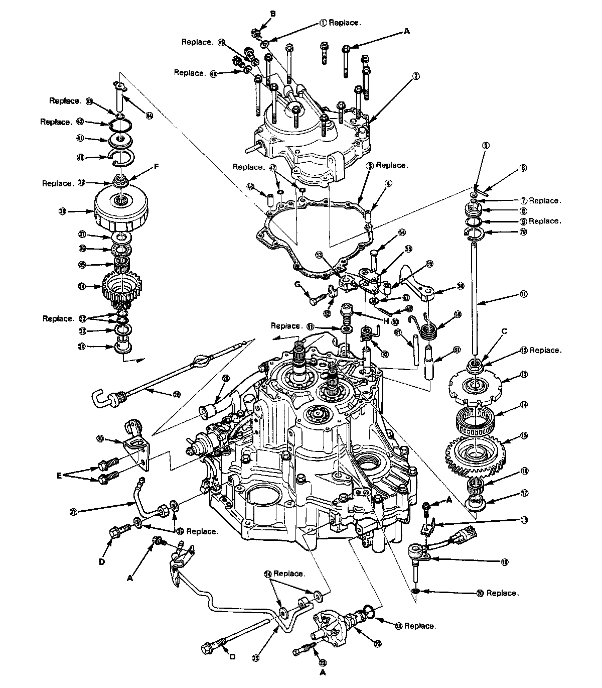
RO 4-spd A/T, Side Cover Assembly 2 Of 6:
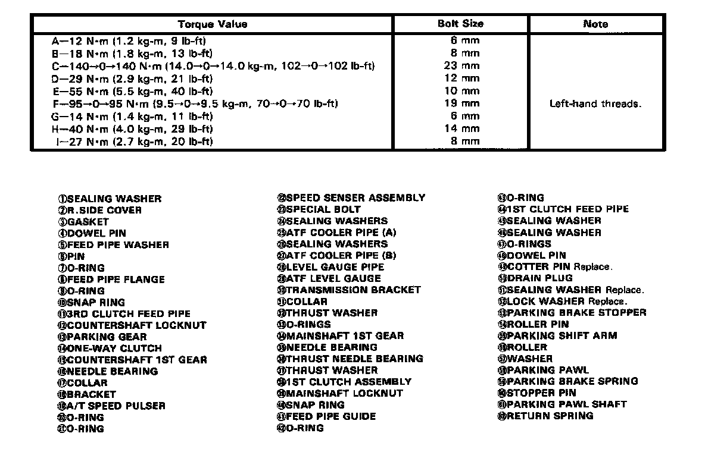
RO 4-spd A/T, Transmission Housing Assembly 3 Of 6:
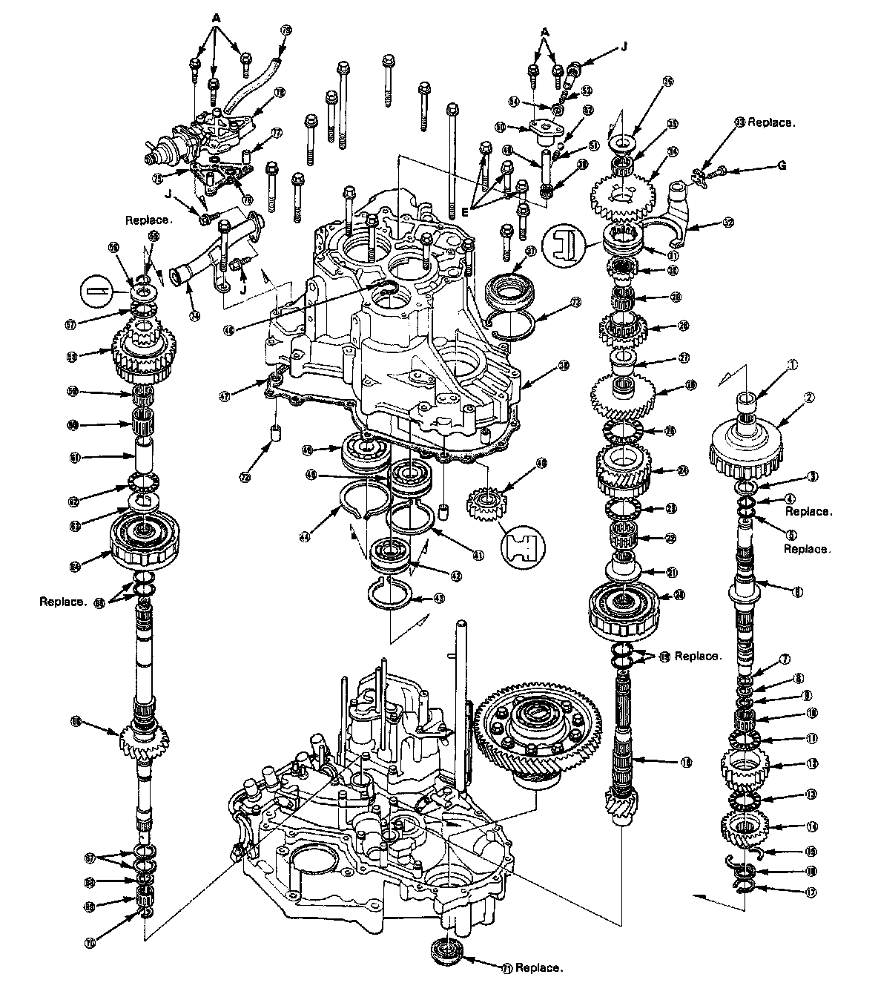
Ro 4-spd A/T, Transmission Housing 4 Of 6:
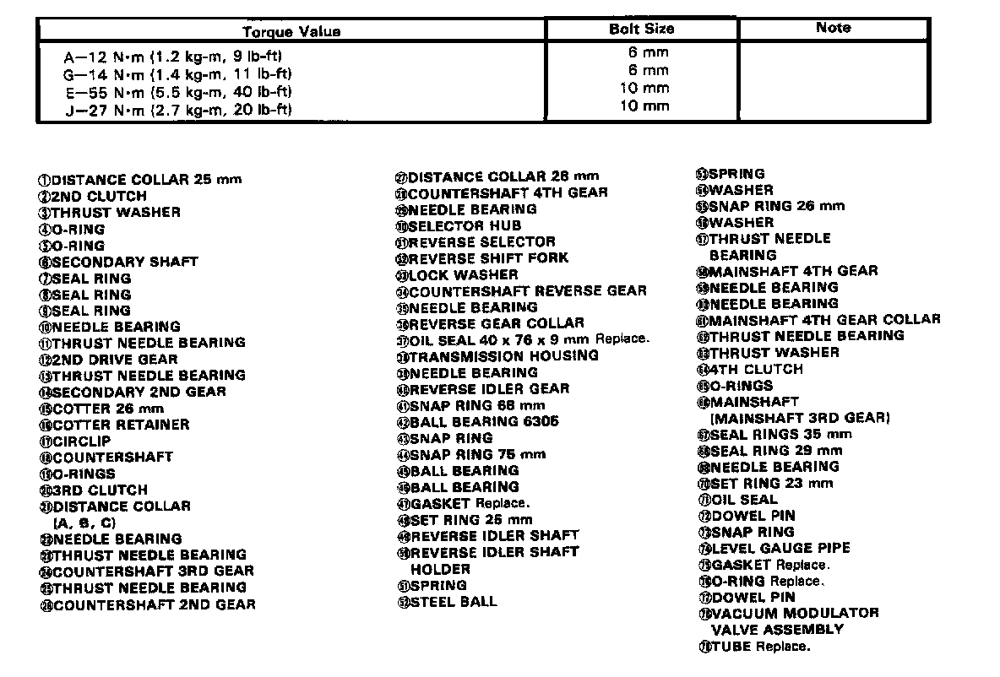
RO 4-spd A/T, Torque Converter Housing 5 Of 6:
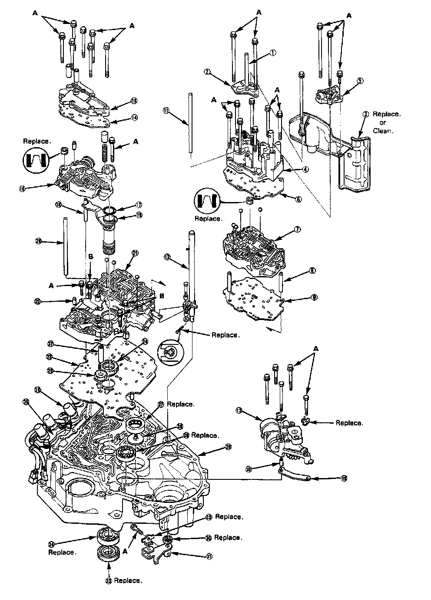
RO 4-spd A/T, Torque Converter Housing 6 Of 6:
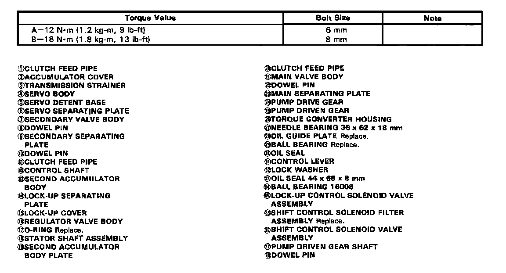
RO 4-spd A/T, Parking Brake Stopper Lock Bolt:
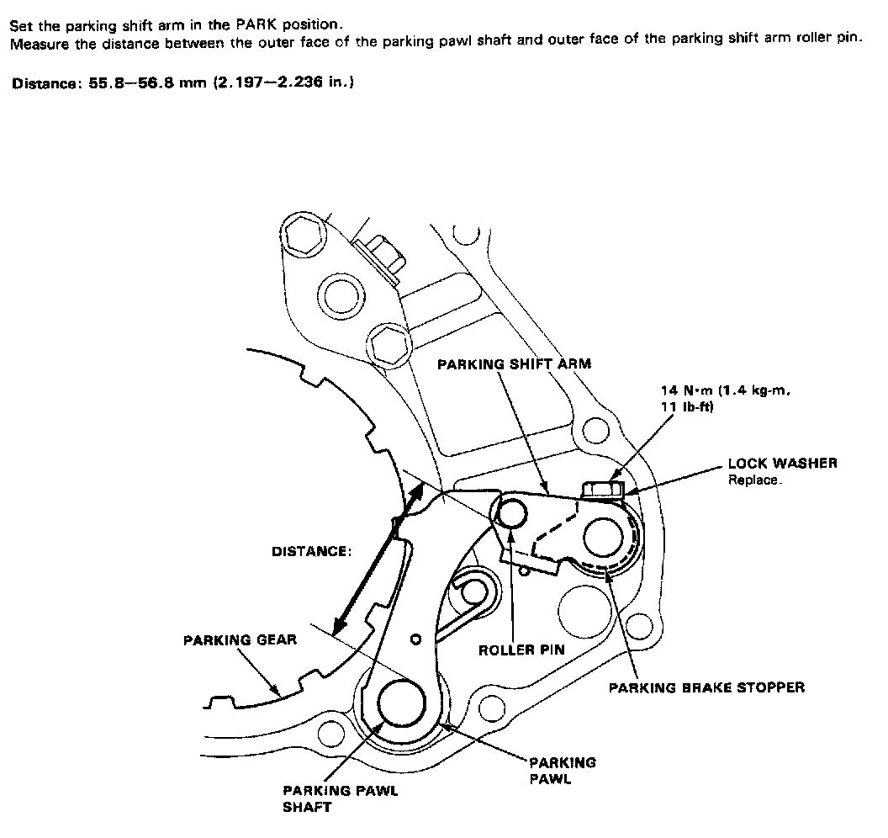
RO 4-spd A/t, Torque Converter Assembly:
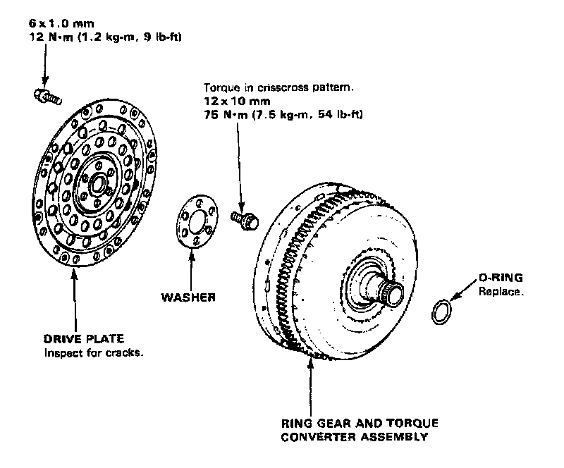
RO 5-spd A/T, Transmission Mounting:
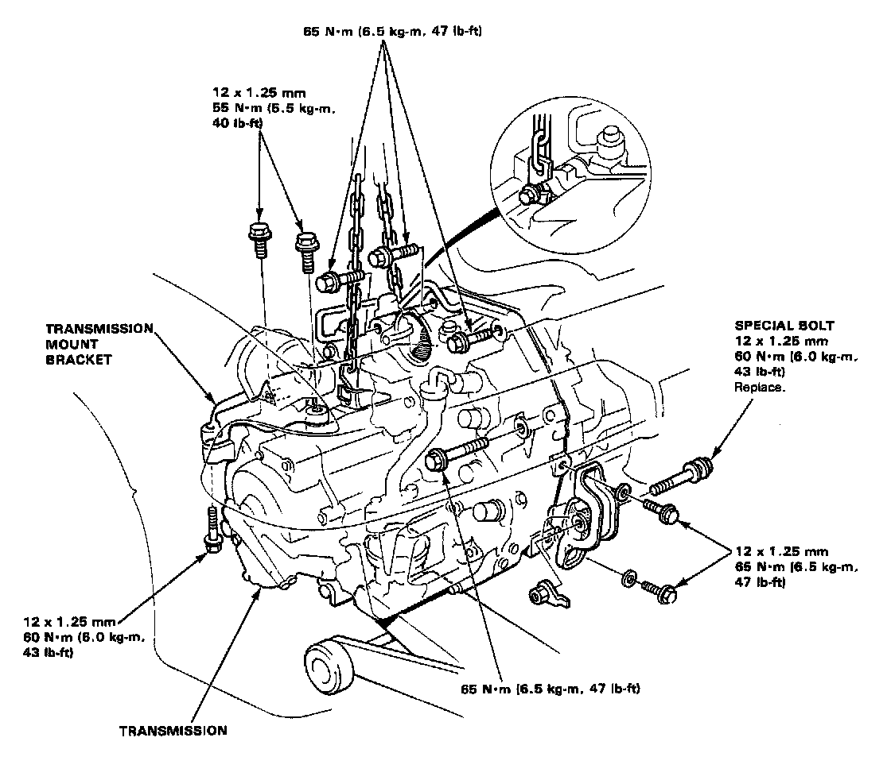
RO 4-spd A/T, Transmission Housing Mounting:
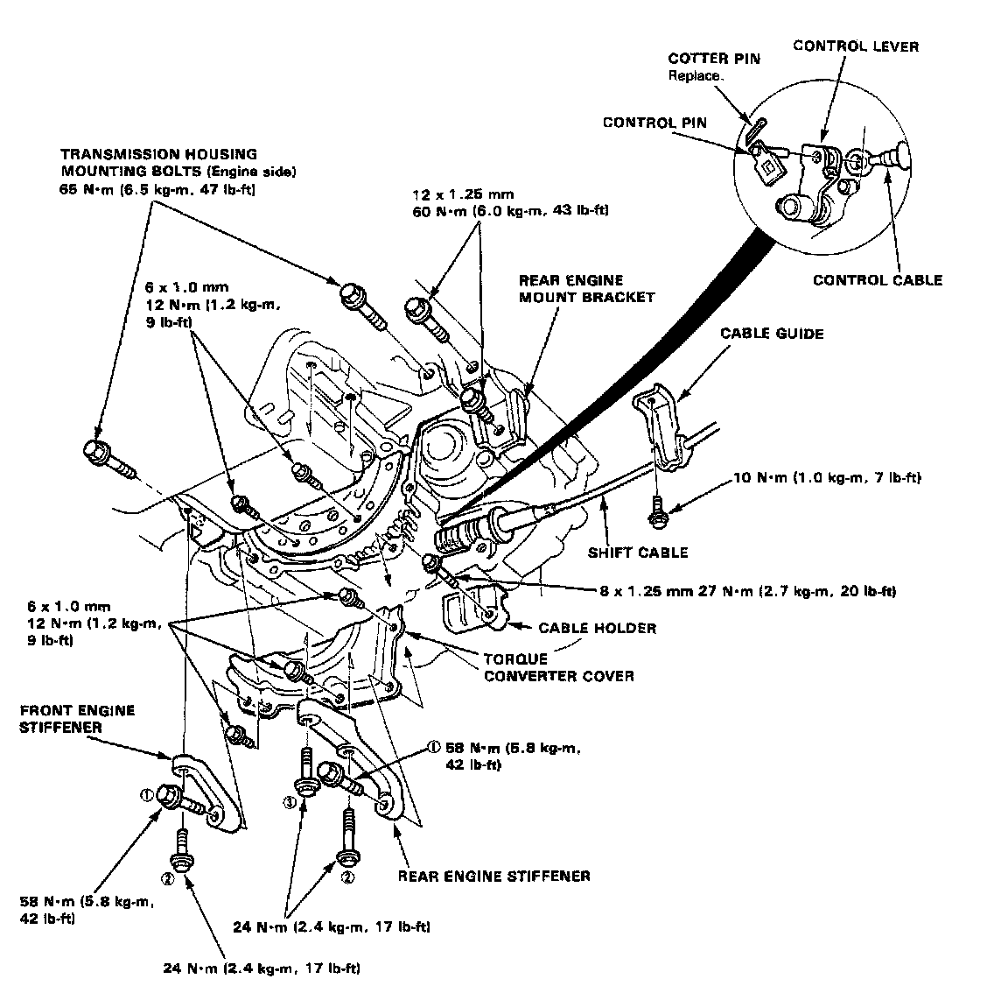
RO 4-spd A/T, Gear Shift Selector:
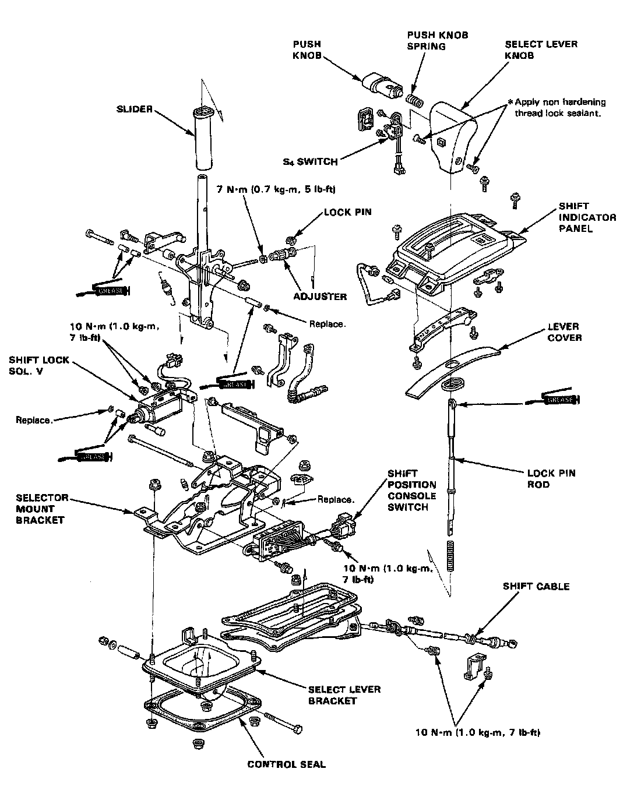
RO 4-spd A/T, Shift Cable Bracket & Guide:
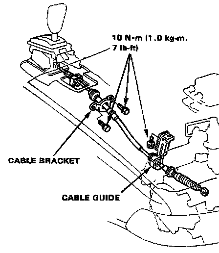
RO 4-spd A/T, Vacuum Modulator Assembly:
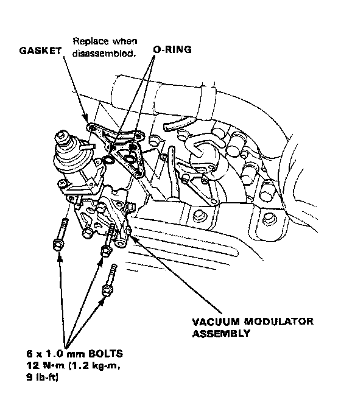